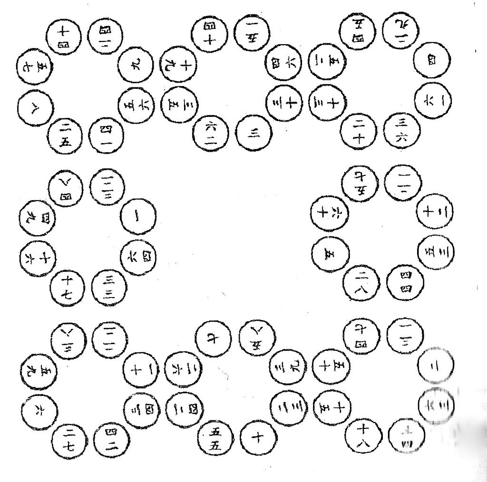

《九章算术》的内容十分丰富，全书采用问题集的形式，收有246个与生产、生活实践有联系的应用问题，其中每道题有问（题目）、答（答案）、术（解题的步骤，但没有证明），有的是一题一术，有的是多题一术或一题多术。这些问题依照性质和解法分别隶属于方田、粟米、衰（cuī）分、少广、商功、均输、盈不足、方程及勾股。共九章如下所示。原作有插图，今传本已只剩下...
《九章算术》早期文本的编纂时间及经过,历代聚讼,众说不一,目前为止,最明确而中肯的论定还是出自刘徽的《九章算术注·原序》：昔在庖牺氏始画八卦,以通神明之德,以类万物之情,作九九之术,以合六爻之变...
《九章算术》九卷，是现存最早的中国古代数学著作之一，《算经十书》中最重要的一种。其作者不可考。后集成书约于公元前100年，汇集了周朝以来的古代数学知识，[2]由西汉张苍汇整。《九章算术》...
《海岛算经》共九问。都是用表尺重复从不同位置测望，取测量所得的差数，进行计算从而求得山高或谷深，这就是刘徽的重差理论。《海岛算经》中，从题目文字可知所有计算都是用筹算进行的。“为实”指作为一个分数的分子，“为法”指作为分数的分母。所用的长度单位有里、丈、步、尺、寸；1里=180丈=1800尺；1丈=10尺：1步=6尺，1尺=10寸。（1）今有望海岛，立两...
刘徽（生于公元250年左右），是中国数学史上一个非常伟大的数学家，在世界数学史上，也占有杰出的地位．他的杰作《九章算术注》和《海岛算经》，是我国最宝贵的数学遗产。《九章算术》约成书于东汉之初，共有246个问题的解法．在许多...
南北朝数学家祖冲之曾为《九章重差图》作注。唐朝将《九章重差图》从《刘徽九章算术注》中分离出来单独成书，以第一题“今有望海岛”取名为《海岛算经》。唐高宗显庆元年（656年）...
《五曹算经》，北周甄鸾所著。 唐代史料中多有“《五曹》、《孙子》等十部算经”一类说法，表明此书是“算经十书”中较受唐代官方重视的一部算书。作为唐宋官方数学教育的教材，《五曹算经》代有刊刻传抄，受到历朝很多数学家的重视，其历史影响不可低估。另一方面，与十部算经中其他算书相比，《五曹算经》的编排和卷名更显著地表明它服务于相应的社会经济制度。因此，对《五曹算经》的研究有助于我们了解中国数学史及相关社会背景问题。然而，由于此书所载算题“解题方法都...
甄鸾，字叔遵（535-566），无极（今河北省无极县）人，北周数学家，官司隶校尉、汉中太守。信佛教，擅长于精算，制天和历法，于天和元年（566年）起被采用颁行。曾注释不少古算书，著有《五经算术》等。 另有周天和年历一卷,《七曜算术》二卷...
北魏初年推行“计口授田”制，实际上是一种民屯，其实施办法可见于太平真君五年（444年）下令“有牛家与无牛家一人种田二十二亩，偿以私锄功七亩，如是为差；至与小、老无牛家种田七亩，小、老者偿以锄功二亩。皆以五口以下贫家为率。各列家别口数，所劝种顷亩，明立簿目”，太和元年（477年）又规定“一夫制治田四十亩，中男二十亩。”这种“授田”制度可以追溯到战国时期的魏、秦等国。《九章算术》记载...
中国南宋数学家秦九韶撰。秦九韶早年曾在杭州学习，后又从隐君子学习数学，成年后先后在湖北、安徽、江苏等地做官。1244年因母亡故回家守孝，潜心数学研究，于1247年9月著成《数术大略》，明代后期改名为《数书九章》。这是秦九韶唯一的数学著作，但仅此就使他成为中国宋元时期杰出的数学家之一。
秦九韶（1208年－1268年），字道古，汉族，祖籍鲁郡（今河南省范县），出生于普州（今四川安岳县） [8]。 [1]南宋著名数学家，与李冶、杨辉、朱世杰并称宋元数学四大家。 精研星象、音律、算术、诗词、弓、剑、营造之学，历任琼州知府、司农丞，后遭贬，卒于梅州任所，1247年完成著作《数书九章》，其中的大衍求一术（一次同余方程组问题的解法，也就是所称的中国剩余定理）...
全书采用问题集的形式，并不按数学方法来分类。题文也不只谈数学，还涉及自然现象和社会生活，成为了解当时社会政治和经济生活的重要参考文献。 《数书九章》在数学内容上颇多创新。中国算筹式记数法及其演算式在此得以完整保存；自然数、分数、小数、负数都有专条论述，还第一次用小数表示无理根的近似值；卷1大衍类中灵活运用最大公约数和最小公倍数，并首创连环求等，借以求几个数的最小公倍数...
《杨辉算法》是宋代数学家杨辉的三种后期六卷数学著作的总称，这三种著作是《乘除通变算宝》卷上下、《田亩比类乘除捷法》卷上中下、和《续古摘奇算法》。
杨辉，字谦光，汉族，钱塘（今浙江省杭州）人，南宋杰出的数学家。 他曾担任过南宋地方行政官员，为政清廉，足迹遍及苏杭一带。他在总结民间乘除捷算法、“垛积术”、纵横图以及数学教育方面，均做出了重大的贡献。他是世界上第一个排出丰富的纵横图和讨论其构成规律的数学家...
比类乘除捷法
《田亩比类乘除捷法二卷。卷上叙述长田形，圭田，斜田，圆田，环田，苑田和丘田的面积计算以及圭垛、梯形垛、方箭、圆箭等数列求和 [1]。
乘除通变算宝
乘除通变算宝》三卷。 卷上 《算法通变本末》 《习算纲目》，杨辉为学员制定的学习纲目和时间表，例如 “学相乘起例定位 功课一日”，“温习九归题目 一日”；“开方乃算法中大节目”，用两月演习题目等...
《测圆海镜》是中国金代数学家李冶的代表作，于公元1248年写成。全书一共十二卷，由一百七十个问题组成。书中对勾股容圆的问题进行了探讨，系统地建立了“天元术”（列一元方程的方法）来解决几何问题。《测圆海镜》被认为是中国现存的第一部天元术著作。
李冶（1192年—1279年），本名李治[注 1]，字仁卿，号敬斋，真定栾城（今河北省栾城县）人，金代、元代文学家、数学家。主要著作为《测圆海镜》，其中改进了前人的解方程方法，首次系统地阐述了“天元术”
天元术并非李冶的独创，而是从金代起便在中国北方开始萌芽。据祖颐在《四元玉鉴后序》中的记载，李冶以前研究天元术的学者有北宋蒋周撰《益古集》、李文一撰《照胆》，石信道撰《钤经》、刘汝谐撰《如积释锁》等书，世人才知道有天元。此外朱世杰《四元玉鉴》引用北宋《洞渊九容细草》两道题，其中有“立天元一”[17]。
《缉古算经》，原名《缉古算术》，初唐数学家王孝通著于武德九年〔626年〕前所著。后被列入算经十书，改名为《缉古算经》。《缉古算经》一书在中国数学史上有重要影响，王孝通在书中将几何问题代数化，在世界上首次系统地创立三次多项式方程，对代数学的发展，有重要意义。王孝通在此书中建立 25个三次方程，其中自第二问至第十八问中的23个三次方程有如下形式...
王孝通（？—7世纪），唐代数学家。王孝通生于北周武帝年间。曾在隋朝做官。唐初为算历博士[1]，从八品，参修历法，武德六年（623年）与吏部郎中祖孝孙校勘傅仁均的《戊寅元历》，曾提出批评。武德九年（626年）任通直郎太史丞，从七品[2]。贞观年间逝世...
《缉古算经》在唐代就有抄本，宋元丰七年（1084年）有秘书监赵彦若等校定刊本，但到明代，刊本几乎遗失，仅存章丘李开先所藏一部南宋刊本。清代毛晋获得《缉古算经》，影抄传世。《缉古算经》影抄本后归常熟毛扆汲古阁收藏；清乾隆年间孔继涵得毛扆汲古阁所藏宋元丰七年《缉古算经》影抄本和其他算书六种...
《四元玉鉴》是中国元朝数学家朱世杰的代表作，成书于大德七年（1303年）。书中主要讲述了多元（一元至四元）高次方程组的建立和化为一元高次方程（最高达14次）的消元法。建立四元高次方程及根据逐次消元法将多元高次方程化为一元高次方程的方法称为四元术...
朱世杰（1249年—1314年），字汉卿，号松庭，燕山人，元代数学家兼教育家，毕生从事数学教育。朱世杰在当时天元术的基础上发展出“四元术”，也就是列出四元高次多项式方程，以及消元求解的方法。此外他还创造出“垛积法”，即等幂数列的求和方法（等幂求和），与“招差术”，即有限差分法。主要著作是《算学启蒙》与《四元玉鉴》...
在元灭南宋以前，南北之间的交往，特别是学术上的交往几乎是断绝的。南方的数学家对北方的天元术毫无所知，而北方的数学家也很少受到南方的影响。朱世杰曾“周游四方”，莫若（古代数学家）序中有“燕山松庭朱先生以数学名家周游湖海二十余年矣。四方之来学者日众，先生遂发明《九章》之妙，以淑后图学，为书三卷……名曰《四元玉鉴》”，祖颐后序中亦有“汉卿名世杰，松庭其自号也。周流四方，复游广陵，踵门而学者云集”...
《算学宝鉴》全称《新集通证古今算学宝鉴》，是晋商数学家王文素的数学著作，完成于明嘉靖三年（1524年）。全书分12本42卷，近50万字。其自成书后“四百年间未见各收藏家及公私书目著录，民国年间由北京图书馆于旧书肆中发现一兰格抄本而得以入藏”。正是这一偶然发现，才得以将明代数学最高水平的代表作明示天下...
王文素（生卒年不详），字尚彬，山西汾州（今汾阳市）人，明代数学家。 王文素于成化年间（1465年-1487年），随父亲到河北真定（今正定）经商，举家迁居于真定饶阳。晚年以教书为业，研究杨辉、吴敬等人的20余部数学著作。 王文素所著《新集通证古今算学宝鉴》，成书于明正德八年（1513年）。增订于嘉靖三年（1524年），后因缺少资金未能刻印出版，以稿本形式流传，现存于中国国家图书馆...
首图：河图，洛书图，六觚图，方圆图，度图，量图，衡图，五辰图，五音相生图，律吕相生图，洛书均数图，花十六图，求等图，辐辏图，方胜图，王字图，古珞钱图，连环图，缨络图，三同六变图...
《九章算术》早期文本的编纂时间及经过,历代聚讼,众说不一,目前为止,最明确而中肯的论定还是出自刘徽的《九章算术注·原序》：昔在庖牺氏始画八卦,以通神明之德,以类万物之情,作九九之术,以合六爻之变。……按：周公制礼而有九数,九数之流,则《九章》是矣。往者暴秦焚书,经术散坏。自时厥后,汉北平侯张苍、大司农中丞耿寿昌皆以善算命世。苍等因旧文之遗残,各称删补。故校其目则与古或异,而所论者多近语也。
郭书春认为刘徽关于《九章算术》编纂的论述是完全正确的。他说：“《九章算术》由先秦‘九数’发展而来的,是张苍、耿寿昌在先秦遗文的基础上先后整理、加工、增补而成的,它的最后编定者是耿寿昌,时在公元前一世纪中叶。”但在早期文本的流传过程中书名的确定尚存诸多疑点,据现有史料推测,《九章算术》书名出现应晚于文本的编定,约于公元一世纪后期。[5]，但也有不同的看法认为《九章算术》没有直接受到《算数书》影响。
1984年，在湖北出土了《算数书》书简。据考证，它比《九章算术》要早一个半世纪以上，书中有些内容和《九章算术》非常相似，一些内容的文句也基本相同。有人推测两书具有某些继承关系，但也有不同的看法认为《九章算术》没有直接受到《算数书》影响。[5]。唐代李淳风又重新做注（656年），《算经十书》之一[5]，也是国子监算学馆的教材和明算科的考试项目。
根据研究，西汉的张苍、耿寿昌曾经做过增补和整理，其时大体已成定本。其基本内容在西汉后期已经基本定型。九章算术将书中的所有数学问题分为九大类，就是“九章”。
1984年，在湖北出土了《算数书》书简。据考证，它比《九章算术》要早一个半世纪以上，书中有些内容和《九章算术》非常相似，一些内容的文句也基本相同。有人推测两书具有某些继承关系[5]，但也有不同的看法认为《九章算术》没有直接受到《算数书》影响。
由于《九章算术》中只是列出了例子及一般的算法，却很少有任何解释和说明，所以有很多人曾为《九章算术》作注，提出了简括的证明，证明了一些算法的正确性。较为著名的有在三国时期魏元帝景元四年（263年），刘徽为《九章》作注，加上自己的心得体会，使其便于被了解，而可以流传下来[5]。唐代李淳风又重新做注（656年），《算经十书》之一[5]，也是国子监算学馆的教材和明算科的考试项目。
《九章算术》的内容十分丰富，全书采用问题集的形式，收有246个与生产、生活实践有联系的应用问题，其中每道题有问（题目）、答（答案）、术（解题的步骤，但没有证明），有的是一题一术，有的是多题一术或一题多术。这些问题依照性质和解法分别隶属于方田、粟米、衰（cuī）分、少广、商功、均输、盈不足、方程及勾股。共九章如下所示。原作有插图，今传本已只剩下正文了。
《九章算术》共收有246个数学问题，分为九章。它们的主要内容分别是：
第一章“方田”： 主要讲述了平面几何图形面积的计算方法。包括长方形、等腰三角形、直角梯形、等腰梯形、圆形、扇形、弓形、圆环这八种图形面积的计算方法。另外还系统地讲述了分数的四则运算法则，以及求分子分母最大公约数等方法。其中例题38个，立术21条。
第二章“粟米”：谷物粮食的按比例折换；提出比例算法，称为今有术；衰分章提出比例分配法则，称为衰分术；其中例题46个，立术33条。
第三章“衰分”：比例分配问题。其中例题20个，立术22条。
第四章“少广”：已知面积、体积，反求其一边长和径长等；介绍了开平方、开立方的方法。其中例题24个，立术16条。
第五章“商功”：土石工程、体积计算；除给出了各种立体体积公式外，还有工程分配方法；其中例题28个，立术24条。
第六章“均输”：合理摊派赋税；用衰分术解决赋役的合理负担问题。今有术、衰分术及其应用方法，构成了包括今天正、反比例、比例分配、复比例、连锁比例在内的整套比例理论。西方直到15世纪末以后才形成类似的全套方法。其中例题28个，立术28条。
第七章“盈不足”：即双设法问题；提出了盈不足、盈适足和不足适足、两盈和两不足三种类型的盈亏问题，以及若干可以通过两次假设化为盈不足问题的一般问题的解法。这也是处于世界领先地位的成果，传到西方后，影响极大。其中例题20个，立术27条。
第八章“方程”：一次方程组问题；采用分离系数的方法表示线性方程组，相当于现在的矩阵；解线性方程组时使用的直除法，与矩阵的初等变换一致。这是世界上最早的完整的线性方程组的解法。在西方，直到17世纪才由莱布尼兹提出完整的线性方程的解法法则。这一章还引进和使用了负数，并提出了正负术——正负数的加减法则，与现今代数中法则完全相同；解线性方程组时实际还施行了正负数的乘除法。这是世界数学史上一项重大的成就，第一次突破了正数的范围，扩展了数系。外国则到7世纪印度的婆罗摩及多才认识负数。其中例题18个，立术19条。
第九章“勾股”：利用勾股定理求解的各种问题。其中的绝大多数内容是与当时的社会生活密切相关的。提出了勾股数问题的通解公式：若a、b、c分别是勾股形的勾、股、弦，则a²+b²=c²。在西方，毕达哥拉斯、欧几里得等仅得到了这个公式的几种特殊情况，直到3世纪的丢番图才取得相近的结果，这已比《九章算术》晚约3个世纪了。勾股章还有些内容，在西方却还是近代的事。例如勾股章最后一题给出的一组公式，在国外到19世纪末才由美国的数论学家迪克森得出。其中例题24个，立术19条。
《九章算术》是《算经十书》中最重要的一部，成于公元一世纪左右。其作者已不可考，一般认为它是经历代各家的增补修订，而逐渐发展完备成为现今定本的，西汉的张苍、耿寿昌曾经做过增补和整理，其时大体已成定本。最后成书最迟在东汉前期，现今流传的大多是在三国时期魏元帝景元四年（263年），刘徽为《九章》所作的注本。
《九章算术》内容十分丰富，全书总结了战国、秦、汉时期的数学成就。同时，《九章算术》在数学上还有其独到的成就，不仅最早提到分数问题，也首先记录了盈不足等问题。《方程》章还在世界数学史上首次阐述了负数及其加减运算法则。它是一本综合性的历史著作，是当时世界上最简练有效的应用数学，它的出现标志中国古代数学形成了完整的体系。
刘徽（生于公元250年左右），是中国数学史上一个非常伟大的数学家，在世界数学史上，也占有杰出的地位．他的杰作《九章算术注》和《海岛算经》，是我国最宝贵的数学遗产。
《九章算术》约成书于东汉之初，共有246个问题的解法．在许多方面：如解联立方程，分数四则运算，正负数运算，几何图形的体积面积计算等，都属于世界先进之列，但因解法比较原始，缺乏必要的证明，而刘徽则对此均作了补充证明．在这些证明中，显示了他在多方面的创造性的贡献．他是世界上最早提出十进小数概念的人，并用十进小数来表示无理数的立方根．在代数方面，他正确地提出了正负数的概念及其加减运算的法则；改进了线性方程组的解法．在几何方面，提出了“割圆术”，即将圆周用内接或外切正多边形穷竭的一种求圆面积和圆周长的方法．他利用割圆术科学地求出了圆周率π=3.14的结果．刘徽在割圆术中提出的“割之弥细，所失弥少，割之又割以至于不可割，则与圆合体而无所失矣”，这可视为中国古代极限观念的佳作。
南北朝数学家祖冲之曾为《九章重差图》作注。唐朝将《九章重差图》从《刘徽九章算术注》中分离出来单独成书，以第一题“今有望海岛”取名为《海岛算经》。唐高宗显庆元年（656年）数学家李淳风等注释《算经十书》，作为国子监学习和考试用书，《海岛算经》就是《算经十书》之一，并且规定《海岛算经》的学习期限为三年，是其他算经学习期限的三倍，可见《海岛算经》在唐代受重视的程度。北宋元丰七年（1084年）和南宋宁宗嘉定六年（1213年）先后刻印两次。但宋刻本《海岛算经》后来遗失。南宋秦九韶研究过类似于海岛算经的测量书题目《表望浮屠》南宋数学家杨辉《续古摘奇算法》讨论了四种测量问题，包括来自《海岛算经》海岛题，并指出“登高望松，遥望波口，非三望之术乎？清渊白石、登山临邑，非四望之术乎？”。明永乐年间收入《永乐大典》，但只存刘徽文字和李淳风注，刘徽原图和刘徽所作的注释已不存。元朝数学家朱世杰《四元玉鉴》《勾股测望》门第四，六，七，八等四问用天元术阐述《海岛算经》的《望海岛》，《望深谷》，《南望方邑》，《望清渊》。清乾隆时代，经学家戴震将《海岛算经》文字，从《永乐大典》中辑录出来收入《四库全书》。 清代数学家李潢著《海岛算经细草图说》，沈钦裴著《重差图说》，均以欧几里德几何学论证，已失刘徽原意。 李鏐著《海岛算经纬笔》。到民国时期，中算史家李俨《重差术流源及其新注》和《中国古代中算家的测绘术》，《海岛算经新注》都对《海岛算经》有所论述。
中国数学家白尚恕对海岛算经有较详细的论证。吴文俊院士论文《我国古代测望之学重差理论评介兼评数学史研究中的某些方法问题》 与《海岛算经古证探源》两篇论文对《海岛算经》有详细的论证，前文批评一些前人对《海岛算经》的论证中添加欧几里德几何的平行线或利用相似形理论或后代的代数论证的方法，颠倒历史，都是错误的方法，并提出正确的论证，必须以刘徽时代的出入相补原理为基础，才能还原《海岛算经》的本来面目。
《海岛算经》共九问。都是用表尺重复从不同位置测望，取测量所得的差数，进行计算从而求得山高或谷深，这就是刘徽的重差理论。《海岛算经》中，从题目文字可知所有计算都是用筹算进行的。“为实”指作为一个分数的分子，“为法”指作为分数的分母。所用的长度单位有里、丈、步、尺、寸；1里=180丈=1800尺；1丈=10尺：1步=6尺，1尺=10寸。
（1）今有望海岛，立两表，齐高三丈，前后相去千步，令后表与前表参相直。从前表却行一百二十三步，人目着地取望岛峰，与表末参合。从后表却行一百二十七步，人目着地取望岛峰，亦与表末参合。问岛高及去表各几何？答曰：岛高四里五十五步；去表一百二里一百五十步。
翻译：假设测量海岛,立两根表高均为3丈,前后相距1000步,令后表与前表在同一直线上,从前表退行123 步,
人目著地观测到岛峰,从后表退行127步,人目著地观测到岛峰,问岛高多少 岛与前表相距多远？
术曰：以表高乘表间为实；相多为法，除之。所得加表高，即得岛高。求前表去岛远近者：以前表却行乘表间为实；相多为法。除之，得岛去表数。
（2）今有望松生山上，不知高下。立两表齐，高二丈，前後相去五十步，令後表与前表参相直。从前表却行七步四尺，薄地遥望松末，与表端参合。又望松本，入表二尺八寸。复从後表却行八步五尺，薄地遥望松末，亦与表端参合。问松高及山去表各几何？答曰：松高一十二丈二尺八寸；山去表一里二十八步、七分步之四。
术曰：以入表乘表间为实。相多为法，除之。加入表，即得松高。求表去山远近者：置表间，以前表却行乘之为实。相多为法，除之，得山去表。
（3）今有南望方邑，不知大小。立两表东、西去六丈，齐人目，以索连之。令东表与邑 东南隅及东北隅参相直。当东表之北却行五步，遥望邑西北隅，入索东端二丈二尺六寸半。又却北行去表一十三步二尺，遥望邑西北隅，适与西表相参合。问邑方及邑去表各几何？答曰：邑方三里四十三步、四分步之三；邑去表四里四十五步。
术曰：以入索乘後去表，以两表相去除之，所得为景长；以前去表减之，不尽以为法。置後去表，以前去表减之，余以乘入索为实。实如法而一，得邑方。求去表远近者：置後去表，以景长减之，余以乘前去表为实。实如法而一，得邑去表。
（4）今有望深谷，偃矩岸上，令勾高六尺。从勺端望谷底，入下股九尺一寸。又设重矩于上，其矩间相去三丈。更从勺端望谷底，入上股八尺五寸。问谷深几何？答曰：四十一丈九尺。
术曰：置矩间，以上股乘之，为实。上、下股相减，余为法，除之。所得以勾高减之，即得谷深。
（5）今有登山望楼，楼在平地。偃矩山上，令勾高六尺。从勾端斜望楼足，入下股一丈二尺。又设重矩於上，令其间相去三丈。更从勾端斜望楼足，入上股一丈一尺四寸。又立小表於入股之会，复从勾端斜望楼岑端，入小表八寸。问楼高几何？答曰：八丈。
术曰：上、下股相减，余为法；置矩间，以下股乘之，如勾高而一。所得，以入小表乘之，为实。实如法而，即是楼高。
（6）今有东南望波口，立两表南、北相去九丈，以索薄地连之。当北表之西却行去表六丈，薄地遥望波口南岸，入索北端四丈二寸。以望北岸，入前所望表里一丈二尺。又却行，後去表一十三丈五尺。薄地遥望波口南岸，与南表参合。问波口广几何？答曰：一里二百步。
术曰：以後去表乘入索，如表相去而一。所得，以前去表减之，余以为法；复以前去表减後去表，余以乘入所望表里为实，实如法而一，得波口广。
（7）今有望清渊下有白石。偃矩岸上，令勾高三尺。斜望水岸，入下股四尺五寸。望白石，入下股二尺四寸。又设重矩於上，其间相去四尺。更从勾端斜望水岸，入上股四尺。以望白石，入上股二尺二寸。问水深几何？答曰：一丈二尺。
术曰：置望水上、下股相减，余以乘望石上股为上率。又以望石上、下股相减，余以乘望水上股为下率。两率相减，余以乘矩间为实；以二差相乘为法。实如法而一，得水深。
（8）今有登山望津，津在山南。偃矩山上，令勾高一丈二尺。从勾端斜望津南岸，入下股二丈三尺一寸。又望津北岸，入前望股里一丈八寸。更登高岩，北却行二十二步，上登五十一步，偃矩山上。更从勾端斜望津南岸，入上股二丈二尺。问津广几何？答曰：二里一百二步。
术曰：以勾高乘下股，如上股而一。所得以勾高减之，余为法；置北行，以勾高乘之，如上股而一。所得以减上登，余以乘入股里为实。实如法而一，即得津广。
（9）今有登山临邑，邑在山南。偃矩山上，令勾高三尺五寸。令勾端与邑东南隅及东北隅参相直。从勾端遥望东北隅，入下股一丈二尺。又施横勾於入股之会，从立勾端望西北隅，入横勾五尺。望东南隅，入下股一丈八尺。又设重矩於上，令矩间相去四丈。更从立勾端望东南隅，入上股一丈七尺五寸。问邑广长各几何？答曰：南北长一里百步；东西广一里三十三步、少半步。
术曰：以勾高乘东南隅入下股，如上股而一，所得减勾高，余为法；以东北隅下股减东南隅下股，余以乘矩间为实。实如法而一，得邑南北长也。求邑广：以入横勾乘矩间为实。实如法而一，即得邑东西广。
甄鸾，字叔遵（535-566），无极（今河北省无极县）人，北周数学家，官司隶校尉、汉中太守。信佛教，擅长于精算，制天和历法，于天和元年（566年）起被采用颁行。曾注释不少古算书，著有《五经算术》等。 另有周天和年历一卷,《七曜算术》二卷。
所谓《算经十书》，除《缀术》及后边的《缉古算经》外，都有他撰注的记载。他所撰的《五曹算经》、《五经算术》和《数术记遗》，今有传本。《五曹算经》是一部为地方官员撰写的应用数学书，内容浅近。《五经算术》对于《尚书》、《诗经》、《周易》、《周官》、《礼记》、《论语》等经籍中涉及数学、天文历法的内容，作了注释，在数学上并没有创新。《数术记遗》题“汉徐岳撰，甄鸾注”。近人认为此书是甄鸾自撰自注而伪托徐岳的作品，也有的学者认为确为徐岳撰、甄莺注。书中记载三种进位制度和14种记数法，其中“积算”即筹算，而“珠算”虽不是元、明之后的珠算盘，但开后者之先河，似无可疑。“计数”则介绍了一种别于古代传统的测望方法。其余算法则大都脱离实际。他对《周髀算经》的注释，水平不高，而关于其他算经的注释，都已失传。
《五曹算经》，北周甄鸾所著。
唐代史料中多有“《五曹》、《孙子》等十部算经”一类说法，表明此书是“算经十书”中较受唐代官方重视的一部算书。作为唐宋官方数学教育的教材，《五曹算经》代有刊刻传抄，受到历朝很多数学家的重视，其历史影响不可低估。另一方面，与十部算经中其他算书相比，《五曹算经》的编排和卷名更显著地表明它服务于相应的社会经济制度。因此，对《五曹算经》的研究有助于我们了解中国数学史及相关社会背景问题。然而，由于此书所载算题“解题方法都很浅近，数字计算不须要分数的概念”，而被视为“稍为有些落后的”，从数学史“内史”角度来看，学者们容易认为其研究价值不高。此外，该书分为“田曹”、“兵曹”、“集曹”、“仓曹”、“金曹”五卷，每卷标题后又都有李淳风所作题解，似乎很容易就能把各卷算题同当时行政事务对应起来。所以，以往的数学史论著往往仅注意它在算法上粗略的一面。对于算题的社会背景，论说也很简略粗疏，还出现了一些误解。
北魏初年推行“计口授田”制，实际上是一种民屯，其实施办法可见于太平真君五年（444年）下令“有牛家与无牛家一人种田二十二亩，偿以私锄功七亩，如是为差；至与小、老无牛家种田七亩，小、老者偿以锄功二亩。皆以五口以下贫家为率。各列家别口数，所劝种顷亩，明立簿目”，太和元年（477年）又规定“一夫制治田四十亩，中男二十亩。”这种“授田”制度可以追溯到战国时期的魏、秦等国。《九章算术》记载了多种形状田地的面积计算方法，与春秋战国时代统计土地数量、收取地租、大量开垦土地、土地买卖等活动需要测量多种形状的土地面积有密切的关系，也与当时的授田制有一定的关系。由于当时数学有理论化的倾向，这就引导人们追求方法的普遍性并使获得普遍性和精确性高的算法成为可能，而在当时适应变法求强的各种要求严格的法律和规章制度，也使寻求精确度高的算法成为必要因此《九章算术》有多种表述上具有普遍性、精度较高的田地面积计算，是不奇怪的。晋代也颁布了诸如“男子一人占田七十亩，女子三十亩”之类占田、课田等土地制度。但东汉至六朝时期，国家无力遏制豪族兼并土地，行政工作中计算土地面积的需求就降低了，这一时期对土地的丈量更多体现在买卖田地的契约中，但在晋代以前，地契中对土地各项信息的记录并不规范，各项信息往往记载非常模糊。故从实用角度而言，成书于晋代的《孙子算经》并无详细记载田地面积的计算方法的迫切需要。同样理由也适用于反映5世纪前期中原地区社会经济状况的《张丘建算经》，因为北魏前期授田制基本只推行于边境及首都平城附近。但从北魏开始，国家控制土地的力量又增强了，由此就能更有力地推行朝廷颁布的土地条令。在这一背景下，有的算书中计算田地面积的题目应当会重新增多。不过“授田”制更多的是对前朝制度的继承，将田地面积计算方法恢复到《九章算术》的数量或许就够了，为什么《五曹算经》中会增加这么多描述土地形状的术语和相应的算法呢？
这种情形应该与均田制有密切关系。均田制初行于北魏，后代累有采用，到唐中后期废止。均田制以长期战乱造成的大量无主田、荒地为前提，虽少有触犯大官僚和士家大族的利益，但为广大下层农民获得合法土地提供了一定的保证，而且涉及的地域甚广。北魏均田制的标志性事件是太和九年（485年）颁布均田令，规定了农民在各种情况下受露田、桑田的数量，其中数字最大的是“诸男夫十五以上，受露田四十亩，妇人二十亩，奴婢依良。丁牛一头受田三十亩，限四牛。所授之田率倍之，三易之田再倍之，以供耕休及还受之盈缩”，男夫受“桑田”二十亩。而在人多地少的“狭乡”，如农民不愿迁移，所受田地数量就会少些。由于是政府主持，地方籍帐中出现大量授田及还田的记录，都对各块土地的标的、“四至”及面积有详细描述。算书中对田地面积计算法求多求全，与这种由国家对土地管理的增强带来的规范化不无关系。另一方面，在均田制下，农民死后或年逾七十原则上要将所受露田归还给政府，实际操作中往往采取更灵活的方法，如后代可以继承前代所受桑田作为露田（“倍田”），从而使部分田地的还受在家庭内部解决等等。但无论还田采取何种形式，对于重新受田，官府依然要在户籍中进行记录。而既然对田地的各项信息都要详细记载，那么也应对田地面积进行丈量。这与此前少有涉及还田的土地制度相比，丈量田地面积不但在工作量上大大增加，而且成为地方行政部门的一项日常工作。
均田制对于土地面积的计算带来的具体影响，可概括为两方面。一方面，对土地面积的计算更频繁了，最初可能只需把大块土地划分成小块授予农民，太和九年令规定民户所受田地“不得隔越他畔”，即每户所受田地应连成一片，但由于这些田地带有桑田、露田等不同性质，往往又被细分为若干段。经过农民还田官府再授田，或经过多次后代分割继承前代所分桑田等过程，这些小块土地可能会变得越来越细碎，而每块土地的面积都要被丈量出来，因此不仅开始时计算量大，而且频繁的计算会长期出现。另一方面，由于土地被划分为细碎的小块，由于地貌等原因，就容易出现各种形状不规则的田地。
为应付均田制带来的划分、丈量田地面积的繁重计算量，需要编辑相应的算书，提供形状足够多的田地的计算法，以便地方官吏碰到某种形状的田地，就能马上依术计算。《五曹算经》“田曹”卷当以为适应这种需要而编辑的算书为原型。田曹共有19个问题涉及19块田，其中面积超过1顷（100亩）的只有3块（最大的2顷60亩奇100步）。其他的田地中，超过北魏实行均田法时一个适龄男性劳动力所受桑田20亩的只有两块，大于10亩小于20亩的田5块，大于1亩小于10亩的田地6块，低于1亩的田地3块，其中最小的为63步。考虑到北魏时还有一些大户、官员受田都以顷计，《五曹算经》中出现3块超过一顷的田地是可以理解的。余下的16块田地，最大的也只有63亩奇80步，只比一对壮年夫妇所受露田之和60亩稍多一点，还不及一对有牛夫妇所应受的露田数；次大的只有23亩奇150步，也只略多于一壮年妇女所应受露田额20亩、而远小于一个壮年男子所应受的露田额40亩。其他的14块田都小于20亩。如果根据距离《五曹算经》编成年代更近的西魏大统十三年瓜州籍帐，则可看出民户所受每段田地面积都小于20亩，大多数都在10亩以下，而“田曹”卷的19块田中20亩以下面积的田地就有14块，从题目涉及数量上看，这些算题和相应的方法适合于官吏进行学习并付诸应用。同时“田曹”卷收集了形状种类尽可能多的田地计算法，可以满足北魏授田与均田法需要关于各种形状田地的面积算法之要求。范围广泛、频繁进行的计算工作，也使得所需要的大量官吏无暇在精细算法上下功夫，而均田制在北朝还属初创阶段，由于战乱又时废时兴，在工作中难免带有一些粗放和原始的特点，因此《五曹算经》中有些算法不太精确，是可以理解的。
下面，我们将对这些精确度不高的算法进行具体讨论。
1. 由半对角线求正方形田的面积。“田曹”卷第11题，由正方形田的中心到一个顶点的距离（对角线之半）求其面积，其方法为先求对角线，再求正方形的边长，然后自乘。这个问题与《孙子算经》卷上第14题的题设、数字和解法都相同，只是文字稍异。在《九章算术》的“少广”章，专门介绍了开方术，可由面积求出正方形的边长。《孙子算经》卷上第19题和《张丘建算经》卷中的倒数第4题也是由方田（正方形）面积用开方法求其边长。这种利用开方的方法原则上可以求出精确值。但《五曹算经》和《孙子》在求边长时，没有用到开方术，而是根据边长与对角线之比为5:7的近似比率，用比例方法求出边长。对于这类问题，古代可能想到的精确算法有两种。一种是利用勾股定理，由对角线用开方法求出边长，再由边长自乘，得到面积。另一种是利用出入相补原理，可以得知对角线上的正方形面积（对角线的平方）等于两个边长上的正方形的面积（边长的平方）之和，因此可以由对角线自乘，再除以2得到这块田的面积。《五曹》和《孙子》所用算法求出的面积（一顷八十三亩奇一百八十步）比实际面积（一顷八十亩奇十八步）大三亩奇一百六十二步。不使用早几百年就已出现，且时代稍早的算书、甚至同一部算书中仍在使用的精确算法，这种做法说明《五曹》和《孙子》记载的是一种更原始的算法，而其编者并没有根据早已改进的算法来纠正它。我们上面所述的第二种精确算法，需要较多的抽象化和理论化方面的考虑，不容易想到。第一种精确算法需要用到开方，无疑比较复杂、难以掌握，远不如书中所载近似算法那么直截了当，易为一般基层官吏所掌握。
2.四不等田。土地方位通常用“四至”来描述，如果土地面积较大，对丈量精确度又要求不高，一些形状与矩形相去不太远的田地，就能将其近似地作为矩形来处理，这样方田的计算方法通常就能够满足需求。但现实中肯定还存在大量与矩形相差很远的田地，从早期出土文献中能够发现关于不规则四边形的记录。例如汉代买地券中有“南广九十四步，西长六十八步，北广六十五，东长七十九步，为田二十三亩奇百六十四步”，买地券中出现的土地未必真实存在，但从计算结果来看汉代恐怕还没有推行后代计算四不等田面积的通用公式，因为用包括《五曹算经》在内的后世几部算书中统一的算法去计算前述土地面积，并不能算出相同得数；不过，既然东汉已经有了对这种四不等田及其面积的描述，那么《五曹》、《敦煌算书》“均田法”和《夏侯阳》都统一采用的算法（两组对边平均值的乘积），很可能在早于这些算书的时代就已经出现，只是未见于现存的几部更早的算书而已。
3.在曲边形田地的面积计算上，《五曹算经》较前代算书，几乎没有任何进展。即使这类土地本来难以有所变化，也应把一大原因归结为在土地丈量的实际操作中，碰到曲边形土地的机会要远小于四边形土地，而精确计算此类图形面积的方法对于有些地方行政工作者来说，不仅有些高深，而且比较麻烦费事。故《五曹算经》将弧田、覆月田中的曲边，都按直边对待，而将这两种图形，都近似化为三角形来计算面积。这种做法无疑降低了计算的准确性，却简化了运算步骤，方便文化程度不高的下级官吏掌握。
4.对于六边梯形，《五曹算经》有3种，在上列算书中是包含类别最多的，而这在早于它的算书中一种都没有，晚于它的《敦煌算书》和《夏侯阳算经》只分别有2种和1种。在现实中，这种长条形状的田是很多的。它们本可以通过分为两个梯形分别计算其面积、然后求和来解决，但《五曹算经》却采用了另一条思路：先算出三广的平均值，再乘以从。这种算法说明造术者的思路是把这种图形化为矩形来计算，这与三角形田和梯形田的求积法有相似性：对特殊的广进行平均（对梯形是把两广求其平均，对三角形则视为一广为零的梯形来处理，对六边梯形则是三广平均），可以代替各广，他（们）还没有认识到这种代替只适用于一些特殊形状的图形。《五曹》关于这些图形的求积法的思想基础，是面积由一系列线段积累而成的观念。这种观念是很自然的思想，在先秦文献中已经存在，在《九章》及其刘徽注也用到了。当考虑不严密时，古人很容易想到用几条特殊的广的平均值作为诸广的代表。因此，尽管《五曹》中六边梯形的求积法不见于现存早于它的其他算书，但它们未必都由《五曹》那些问题的作者首先提出。《五曹》提出或采用这些精度不高的六边梯形的面积算法，说明它适应现实急务的需要：毕竟这种算法比分为两个梯形来计算，要简便得多，也便于大量基层官吏学习和掌握。
总之，《五曹算经》中出现的形状种类繁多的田地面积计算法，是北朝田地制度下行政部门需要频繁划分、丈量土地的形势对相应的计算工具的必然要求，而其中采用一些精度不高的算法，则不仅与均田制刚刚创立、还不够完善有关，而且也由于这些算法比更精确的算法简单便捷、更易于基层官吏掌握，同时又可以满足大范围的频繁测量与计算有关。唐代田曹的职能“掌园宅、口分、永业及荫田”，需要测算各种田地面积，正与《五曹算经》“田曹”中的问题所讨论的对象非常吻合，由于北周与唐代制度有密切联系，而均田制从北魏到唐中期都有施行，在服务于行政管理的算书中，将计算田地面积的题目列于“田曹”名目之下，是非常恰当的。 [1-5]
秦九韶（1208年—1261年），字道古，鲁郡人，南宋数学家。著作有《数书九章》，其中的大衍求一术（一次同余方程组问题的解法，也就是现在所称的中国剩余定理的历史解法）和秦九韶算法（高次方程正根的数值求法）是有世界意义的重要贡献[1]。
秦九韶的数学成就基本表现在他写的《数书九章》之中。然而，这本书在当时并没有引起大的影响，稍后的杨辉、朱世杰都没有引征过秦九韶的成果[1]。《数书九章》的主要内容偏重于数学的应用方面，全书八十一道题目都是结合当时的实际需要提出的问题。
中国南宋数学家秦九韶撰。秦九韶早年曾在杭州学习，后又从隐君子学习数学，成年后先后在湖北、安徽、江苏等地做官。1244年因母亡故回家守孝，潜心数学研究，于1247年9月著成《数术大略》，明代后期改名为《数书九章》。这是秦九韶唯一的数学著作，但仅此就使他成为中国宋元时期杰出的数学家之一。
《数书九章》最初叫《数术大略》或《数学大略》（9卷），分为9类，每类为一卷。约到元代时更名为《数学九章》，内容也由9卷改为18卷。明初抄本被收入《永乐大典》（1408），另抄本藏于文渊阁。明代学者王应遴传抄时定名为《数书九章》，明末学者赵琦美再抄时沿用此名。抄本形式流传到清代，1781年由李锐校订后收入《四库全书》。1842年由宋景昌校订后收入《宜稼堂丛书》第一次印刷出版，结束了近600年的传抄历史。1898年收入《古今算学丛书》，为第二次印刷。1936年又分别被收入《丛书集成初编》和《国学基本丛书》出版，流传甚广。目前还有十几种抄本传世，成为学者研讨时的珍品。
《数书九章》共列算题81问，分为9类，每类9个问题。主要内容如下：
⑴大衍类：一次同余式组解法。⑵天时类：历法计算、降水量。⑶田域类：土地面积。⑷测望类：勾股、重差。⑸赋役类：均输、税收。⑹钱谷类：粮谷转运、仓窖容积。⑺营建类：建筑、施工。⑻军族类：营盘布置、军需供应。⑼市物类：交易、利息。
全书采用问题集的形式，并不按数学方法来分类。题文也不只谈数学，还涉及自然现象和社会生活，成为了解当时社会政治和经济生活的重要参考文献。
《数书九章》在数学内容上颇多创新。中国算筹式记数法及其演算式在此得以完整保存；自然数、分数、小数、负数都有专条论述，还第一次用小数表示无理根的近似值；卷1大衍类中灵活运用最大公约数和最小公倍数，并首创连环求等，借以求几个数的最小公倍数；在《孙子算经》中“物不知数”问题的基础上总结成大衍求一术，使一次同余式组的解法规格化、程序化，比西方高斯创用的同类方法早500多年，被公认为“中国剩余定理”；卷17市物类给出完整的方程术演算实录，书中还继贾宪增乘开方法进而作正负开方术，使之可以对任意次方程的有理根或无理根来求解，比19世纪英国霍纳的同类方法早500多年；书中卷5田域类所列三斜求积公式与公元1世纪希腊海伦给出的公式殊途同归；卷7、卷8测望类又使《海岛算经》中的测望之术发扬光大，再添光彩。
《数书九章》是对《九章算术》的继承和发展，概括了宋元时期中国传统数学的主要成就，标志着中国古代数学的高峰。当它还是抄本时就先后被收入《永乐大典》和《四库全书》。1842年第一次印刷后即在中国民间广泛流传。秦九韶所创造的正负开方术和大衍求一术长期以来影响着中国数学的研究方向。焦循、李锐、张敦仁、骆腾凤、时曰醇、黄宗宪等数学家的著述都是在《数书九章》的直接或间接影响下完成的。秦九韶的成就也代表了中世纪世界数学发展的主流与最高水平，在世界数学史上占有崇高的地位。
杨辉生于约宋理宗嘉熙二年（1238年），终于约元成宗大德二年（1298年）。
杨辉著有《详解九章算法》12卷、《日用算法》192卷、《乘除通变算宝》3卷、《田亩比类乘除捷法》2卷、《续古摘奇算法》2卷及《九章算法篡类》、《杨辉算法》等多本算法的著作。另一方面，他在宋度宗咸淳年间的两本著作里，亦有提及当时南宋的土地价格。这些资料亦对后世史学家了解南宋经济发展有很重要的帮助。
杨辉在著作中收录了不少现已失传的、古代各类数学著作中很有价值的算题和算法，保存了许多十分宝贵的宋代数学史料。他对任意高次幂的开方计算、二项展开式、高次方程的求解、高阶等差级数、纵横图等问题，都有精到的研究。杨辉十分留心数学教育，并在自己的实践中贯彻其教育思想。杨辉更对于垛积问题（高阶等差级数）及幻方、幻圆作过详细的研究。
由于他在他的著作里提及过贾宪对二项展开式的研究，所以“贾宪三角”又名“杨辉三角”。这比欧洲于17世纪的同类型的研究“帕斯卡三角形”早了差不多五百年。在《乘除通变算宝》中，杨辉创立了“九归”口诀，介绍了筹算乘除的各种速算法等等。这些在中国数学史上，都占有重要的地位。
在《续古摘奇算法》中，杨辉列出了各式各样的纵横图（幻方），它是宋代研究幻方和幻圆的最重要的著述。杨辉对中国古代的幻方，不仅有深刻的研究，而且还创造了一个名为攒九图的四阶同心幻圆和多个连环幻圆。
《杨辉算法》是宋代数学家杨辉的三种后期六卷数学著作的总称，这三种著作是《乘除通变算宝》卷上下、《田亩比类乘除捷法》卷上中下、和《续古摘奇算法》
《田亩比类乘除捷法》二卷。卷上叙述长田形、圭田、斜田、圆田、环田、苑田和丘田的面积计算以及圭垛、梯形垛、方箭、圆箭等数列求和。
《习算纲目》，杨辉为学员制定的学习纲目和时间表，例如 “学相乘起例定位 功课一日”，“温习九归题目 一日”；“开方乃算法中大节目”，用两月演习题目等。
商用乘除算题；此卷详细叙述六种乘法和五种速算加法。
叙述乘除通变算宝，和筹算速算法，包括加法乘、九归新括。
是前两卷所述各种方法的应用题例，1-300筹算速算法。用代数方法建立二至四次方程从已知面积求线段。
《续古摘奇算法》二卷。 卷上叙述纵横图、幻方、幻圆；求年内日甲，地支逢宿、甲子逢宿；数列求和，量仓法，面积速算等。卷下叙述二次方程求解，鸡兔同笼，百鸡问题；乘除速算，盈不足，方圆论和海岛问题等19问。
《测圆海镜》是中国金代数学家李冶的代表作，于公元1248年写成。全书一共十二卷，由一百七十个问题组成。书中对勾股容圆的问题进行了探讨，系统地建立了“天元术”（列一元方程的方法）来解决几何问题。《测圆海镜》被认为是中国现存的第一部天元术著作。 天元术是对具体问题列出方程而后求解的方法。天元术于宋金时期开始发展，到元朝达到一个高峰。在《测圆海镜》问世之前，中国虽有以天人代表未知数用以布列方程和多项式的工作，但早期著作已失，仅存被引用的一些片段。李冶在《测圆海镜》中系统而概括地总结了天元术，用“天元”代替未知数，列出方程，然后求解。
《测圆海镜》由卷一的圆城图式、说明各个长度名称的总率名号、给出各个长度数值的今问正数、囊括了各个量之间关系的公式总集识别杂记；卷二至卷十二，共一百七十个问题及其解答所组成。书中一共有148问，182种方法是以天元术列出方程以求解，其中列出一次方程31个，二次方程106个，三次方程24个，四次方程20个，六次方程1个
李冶（1192年—1279年），本名李治[注 1]，字仁卿，号敬斋，真定栾城（今河北省栾城县）人，金代、元代文学家、数学家。主要著作为《测圆海镜》，其中改进了前人的解方程方法，首次系统地阐述了“天元术”（设未知数并列方程的方法），用以研究直角三角形内切圆和旁切圆的性质。李冶与杨辉、秦九韶、朱世杰并称为“宋元数学四大家”。谥号文正。
和秦九韶一样，李冶并不认为算学是“九九贱技”，认为“小数之假所以为大道所归”，也就是说“道”既来源于“小数”（技艺），又借“小数”而体现[19]。他曾经在《益古演段》序中说过：“安知轩隶之秘不于是乎始？”（谁知道轩辕隶首得道的秘诀不是始于数学呢？）[18]也许通过对数学这种“小数”的追求也可以达到“技进乎道”的境界。
李冶对当时基于道教和理学的数学神秘主义不以为然。在《测圆海镜》的序文中，李冶认为自然之数（数字）虽然不可穷尽但数学的道理（自然之理）是可以推导的，而数学的道理如同黑暗中的光亮一般，只要明白了道理，就可以明白数学的奥妙[20]。
天元术并非李冶的独创，而是从金代起便在中国北方开始萌芽。据祖颐在《四元玉鉴后序》中的记载，李冶以前研究天元术的学者有北宋蒋周撰《益古集》、李文一撰《照胆》，石信道撰《钤经》、刘汝谐撰《如积释锁》等书，世人才知道有天元。此外朱世杰《四元玉鉴》引用北宋《洞渊九容细草》两道题，其中有“立天元一”[17]。后来李德载撰《两仪群英集臻》兼有地元。1306年元刻本《阴阳备用三元节要》三卷下有天元，地元[18]。但是这些早期天元术的著作已经失传。宋代《杨辉算法》保留蒋周《益古集》的一些条段法的题目，没保留天元术的内容。现存元刻本《阴阳备用三元节要》只有一条二元术题，《测圆海镜》是现存最早的系统地讲述天元术的著作。
到了明代，天元术因为艰深难懂而少人研究，几近失传。明代唐顺抄录过《测圆海镜》，但不懂天元术；顾应祥曾经撰写《测圆海镜分类释术》，但完全没有明白天元术中天元为未知数的含义，因而将《测圆海镜》中关于立天元列方程的演算全部删去，只留下用开方术解方程的过程，以便后人学习[19]。李俨认为宋金元发展起来的天元术至此已被遗忘[20]。《测圆海镜分类释术》一书，虽然删除了天元术内容，但保存了全部算题，也补入正确的几何学解法，使得几近失传的《测圆海镜》，得以从新流传[21]。
十八世纪时，随着西洋算学传入中国，李冶等人的天元术著作才被后来的数学家重新发现。戴东原从《永乐大典》中辑录出李冶《测圆海镜》[22]；清朝梅瑴成（梅文鼎之孙）曾经研读元学士李冶的《测圆海镜》，对其中的天元之术感到不解，后来在研习西方的“借根方”法时发现所谓的“借根”就是“立天元”（都是设未知数），方才重新开始认识天元术[23][24]。之后，《四元玉鉴》等其它天元术著作也被重新认识。孔广森曾校对《测圆海镜》中的四章。乾隆三十八年（1773年），《四库全书》收录了李潢家藏本的《测圆海镜》。1798年，清代大藏书家鲍廷博刊印的《知不足斋丛书》中收录了李锐校勘的《测圆海镜细草》十二卷[25]。之后又有焦循和李锐在研究了《测圆海镜》、《益古演段》和《数书九章》后写的《天元一释》和《开方通释》两书，用较为明白的语言详细解释了李冶的天元术和秦九韶的正负开方术。1873年，张楚钟发表《测圆海镜通释》对《识别杂记》中的几百条定理，用几何方法逐条证明。
《缉古算经》全书共二十问，书首为《上缉古算术表》。各问题的形式大致相同，每问以“假令”开头，以“问：……各几何？”或“问：……个多少？”结尾；随后是答案：“答曰……”；最后一段是“术曰”，详细叙述建立方程的理论依据和具体程序。每题都有答案，但关于解题方法，王孝通则言简意骇。
王孝通（？—7世纪），唐代数学家。
王孝通生于北周武帝年间。曾在隋朝做官。唐初为算历博士[1]，从八品，参修历法，武德六年（623年）与吏部郎中祖孝孙校勘傅仁均的《戊寅元历》，曾提出批评。武德九年（626年）任通直郎太史丞，从七品[2]。贞观年间逝世。
毕生喜好数学，对《九章算术》，和祖冲之的《缀术》都有深入研究，在《上缉古算术表》一文中，对《九章算术》和《缀术》的不足之处，都提出过批评。
著有《缉古算经》，在世界上最早提出三次方程式及其解法，唐代为算经十书之一，为国子监的算学课本，对后世有深远影响。
《缉古算经》在唐代就有抄本，宋元丰七年（1084年）有秘书监赵彦若等校定刊本，但到明代，刊本几乎遗失，仅存章丘李开先所藏一部南宋刊本。清代毛晋获得《缉古算经》，影抄传世。《缉古算经》影抄本后归常熟毛扆汲古阁收藏；清乾隆年间孔继涵得毛扆汲古阁所藏宋元丰七年《缉古算经》影抄本和其他算书六种，连同戴东原从永乐大典中编辑出的《海岛算经》等书合为十部，一同刻印刊行；孔继涵所刻《缉古算经》，世称为微波谢本。同时《四库全书》又收入吏部侍郎王杰所藏《缉古算经》的毛晋影抄本。微波谢本后佚，影抄本现存北京故宫博物院。
清代中期，研究《缉古算经》之风盛行，先后有李潢《缉古算经考注》二卷，张敦仁《缉古算经细草》一卷，陈杰《缉古算经细草》一卷，《缉古算经注》二卷，《缉古算经音义》一卷，及按微波谢本抄录的《缉古算经经文》一卷；揭廷锵《缉古算经考注图草》一卷。
1963年中华书局出版钱宝琮校点多《算经十书》，其中包括《缉古算经》[5]
1998年 郭书春 校点《缉古算经》《算经十书》 卷2 辽宁教育出版社。
《四元玉鑑》是中国元朝数学家朱世杰的代表作，成书于大德七年（1303年）。书中主要讲述了多元（一元至四元）高次方程组的建立和化为一元高次方程（最高达14次）的消元法。建立四元高次方程及根据逐次消元法将多元高次方程化为一元高次方程的方法称为四元术。
四元术中根据题目设立四个未知数（天元，地元，人元，物元），和一组四个多元高次非线性方程组。然后从这些方程组中消去一个未知数，得到三个未知数的高次多项式方程组；接着从这三个三元高次方程组中消去第二个未知数，得到两个含两个未知数的高元多项式方程组；下一步从两个二元高次方程组中再消去一个未知数，最后得到只含一个未知数的的高次方程式。
建立方程以及求解方程的机械化方法，是中国传统数学的核心。张苍《九章算术》阐明了解多元线性方程的消元法（即后来高斯重新发现的高斯消元法）。宋朝秦九韶《数学九章》的玲珑开发法解决了一元高次多项式方程的求根问题。朱世傑将张苍消元法推广到多元非线性多项式方程组，将其化为一元高次多项式方程，正可以秦九韶的玲珑开方法求解。在建立方程方面，朱世傑将天元术，推广到多元变数。《四元玉鑑》融汇了张苍消元法，秦九韶玲珑开方法和天元术成就，是中国传统数学的集大成者，将中国传统数学的机械化算法推进到一个高峰。
《四元玉鑑》承前启后，继往开来，其多元多项式方程组的消元法，成为吴文俊院士的特征列数学机械化的基础之一的吴消元法[1]。
此外，《四元玉鑑》还讲述了关于垛积术（三角垛、三角撒星垛、四角垛、圆锥垛、刍童垛、刍甍垛等高阶等差级数的求和问题和反问题）与招差术。
《四元玉鑑》分卷首、上卷、中卷、下卷，24门，收录288问，包括天元术232问，二元术36问，三元术13问，四元术7问[2]。卷首四问是例题，有草（解题步骤），其他284问只有术而没有草。1837年，清代数学家罗士琳补草，刊行《四元玉鑑细草》三卷。
朱世杰（1249年—1314年），字汉卿，号松庭，燕山人，元代数学家兼教育家，毕生从事数学教育。朱世杰在当时天元术的基础上发展出“四元术”，也就是列出四元高次多项式方程，以及消元求解的方法。此外他还创造出“垛积法”，即等幂数列的求和方法（等幂求和），与“招差术”，即有限差分法。主要著作是《算学启蒙》与《四元玉鉴》。
朱世杰的数学成果代表了宋元以来的最高水平，正是因为他吸取了各种先进的思想，并加以创造性的发展。朱世杰对算理十分重视，认为数学的基础是数学理论。朱世杰的方程理论已经超出了实际中的计算需要，而具有更加纯粹的数学性质，提高了数学的抽象程度和一般化程度。《四元玉鉴》中列出过高达十次的方程。但同时朱世杰也很重视天元术等数学理论的实际应用，著作中的许多问题都有实际的背景。
在元灭南宋以前，南北之间的交往，特别是学术上的交往几乎是断绝的。南方的数学家对北方的天元术毫无所知，而北方的数学家也很少受到南方的影响。朱世杰曾“周游四方”，莫若（古代数学家）序中有“燕山松庭朱先生以数学名家周游湖海二十余年矣。四方之来学者日众，先生遂发明《九章》之妙，以淑后图学，为书三卷……名曰《四元玉鉴》”，祖颐后序中亦有“汉卿名世杰，松庭其自号也。周流四方，复游广陵，踵门而学者云集”。经过长期的游学、讲学等活动，终于在1299年和1303年，在扬州，刊刻了他的两部数学杰作——《算学启蒙》和《四元玉鉴》。杨辉书中的归除歌诀在朱世杰所著《算学启蒙》中有了进一步的发展。
清罗士琳认为：“汉卿在宋元间，与秦道古（即秦九韶）、李仁卿可称鼎足而三。道古正负开方，汉卿天元如积皆足上下千古，汉卿又兼包众有，充类尽量，神而明之，尤超越乎秦、李之上”。清代数学家王鉴也说：“朱松庭先生兼秦、李之所长，成一家之著作”。朱世杰全面继承了并创造性地发扬了天元术、正负开方法等秦、李书中所载的数学成就之外，还囊括了杨辉书中的日用、商用、归除歌诀之类与当时社会生活密切相关的各种算法，并作了新的发展。
由此看来，在朱世杰的工作中，不仅有高次方程的解法，天元术等为代表的北方数学的成就，也包括了杨辉工作中所体现出来的日用，商用算法以及各种歌诀等南方数学的成就，不仅继承了古代中国数学的光辉遗产，而且又作了创作性的发展。朱世杰的工作，在一定意义上讲，可以看作是宋元数学的代表，可以看作是古代筹算系统发展的顶峰。就连西方资产阶级学者们也不能否认这一点，乔治·萨顿说：朱世杰“是中国的，他所生存的时代的，同时也是贯穿古今的一位最杰出的数学家”，说《四元玉鉴》“是中国数学著作中最重要的一部，同时也是中世纪最杰出的数学著作之一”。朱世杰以他自己的杰出著作，把中国古代数学推向更高的境界，为中国古代数学的光辉史册，增加了新的篇章，形成了宋代中国数学发展的最高峰。
首图：河图，洛书图，六觚图，方圆图，度图，量图，衡图，五辰图，五音相生图，律吕相生图，洛书均数图，花十六图，求等图，辐辏图，方胜图，王字图，古珞钱图，连环图，缨络图，三同六变图。
第一卷：九章名，大数名，小数名，度名，量名，衡名，亩名，九九合数，乘法起例，除法起例，认六法名，认法实，认乘除法，乘除变数，六术，学算总要，释字，启义，先贤格言，盘中定位数。
第二卷：掌中定位数，悬空定位数。
第三卷：因法，乘法，加法，归法，归除，商除，减法，斤称，端匹。
第四卷：求一代乘，求一代除，身前加，因代繁乘，损乘，连身加，重因重归，重加重减，相乘，实位相同，截法实乘，犯田法，犯斤称，前后犯合数，因总损零，归总还零。
第五卷：互换活法，单因代除，商因代繁除，众九相乘，众九为乘，众九为除，二位归法。
第六卷：乘法通变，除法通变。
第七卷：田亩，诸田求积。
第八卷：圆田求积，弧田求积。
第九卷：里里相乘，积亩求里，诸田带分子，忘长失阔，田求长阔。
第十卷：求田捷径。
第十一卷：粟米，双头六草，重据换。
第十二卷：通分，同分，约分，合分，课分，平分，乘除带分子，论除尽否。
第十三卷：衰分，多出差分，课分互换。
第十四卷：贵贱分身，合和差分，异乘同除，同乘异除。
第十五卷：少广。
第十六卷：平方，平方带分子，截长益广，分停求长阔，带从开平方，差步求和，积步求长阔，众和求长阔。
第十七卷：圭田求长阔，梯田求长阔，环田求长阔，长差求众广，井田求方，牛角田求长阔，弧田求矢，三角田求面，六角田求面。
第十八卷：梭田截面积，圭田截积，勾股田截积，梯田截积，繁广田截积，方田截积，六角田截积。
第十九卷：商功，方圆台求积，长亭台求积，高广不同堤，众广不同堤。
第二十卷：盘量仓窖，盘算草垛，立圆求积，金石评重。
第二十一卷：堆垛，算箭，分子立积。
第二十二卷：均输，轮流均数，迟疾行程，剪管。
第二十三卷：鼠尾差分，双鼠尾差分。
第二十四卷：就物抽分，误和差分，匿积差分，攒纳差分，收纳课税，短长同会。
第二十五卷：盈不足，互换盈不足，盈肭求原，递支盈不足，匿积盈不足，互益求原，折绳求木。
第二十六卷：方程，正负方程，互借求原，金破求原。
第二十七卷：众率分身，犯同方程。
第二十八卷：勾股，勾股较，勾股和，勾股率，方程入勾股，方求斜。
第二十九卷：勾股容方，勾股容圆，圭田容圆，梭田容圆，圆容方，圆套三圆，圆容三角，圆容直，径矢求弦，滚圆求周。
《算学宝鉴》全称《新集通证古今算学宝鉴》，王文素著，完成于明嘉靖三年（1524年）。全书分12本42卷，近50万字。其自成书后“四百年间未见各收藏家及公私书目著录，民国年间由北京图书馆于旧书肆中发现一兰格抄本而得以入藏”。正是这一偶然发现，才得以将明代数学最高水平的代表作明示天下。
《算学宝鉴》对当时见到的数学著作及民间算法、算题，均能“留心通证”，明确指出原书之谬；对“占病法”、“孕推男女”等不科学的算题一律不集。因该书有“通证”的毅力、“新集”的魄力，故有去伪存真、补缺续断、正本清源的结果。
《算学宝鉴》在通证的基础上，“复增乘除图草，定位式样，开方演段，捷径成术”。集算诗中提到的“悬空定位无踪影，带从开方有正翻”，正是其在学术上高人一等、算法上技高一筹的写照。
《算学宝鉴》研究了一元高次方程的数值解法，内容详实可贵，这充分说明一元高次方程数值解法及天元术、四元术在明朝并未完全失传。王文素在解法中所用名词术语、演算程序，基本上与宋元数学一致，并有所发展和创新。
《算学宝鉴》系一部应用数学书，书中例举的米、肉、马、麻等价格资料应有尽有，船费、脚银、税种等经济史料不胜枚举。我们可以从这些资料透视当时的社会生活。《算学宝鉴》虽尘封多年，但从对该书的研究可以得出这样的结论：王文素是继宋杨辉、秦九韶和元朱世杰后明代最杰出的数学巨匠，《算学宝鉴》是代表明代数学中兴的最高水平的数学巨著。王文素的数学成就是中国数学史连续性的有力证据。
手抄孤本《算学宝鉴》直至1939年才被发现，见者不多，对其浩瀚长卷深入研究者不多。即使偶有人提及，也是将它与吴敬和程大位的书一样当作“商人所写的珠算读本”对待。这是王文素及其《算学宝鉴》成书400多年所受到的不公平对待。
手抄孤本《算学宝鉴》直至1939年才被发现，见者不多，对其浩瀚长卷深入研究者不多。即使偶有人提及，也是将它与吴敬和程大位的书一样当作“商人所写的珠算读本”对待。这是王文素及其《算学宝鉴》成书400多年所受到的不公平对待。
任继愈在《中国科学技术典籍通汇》总序中说：“中国古代的科学思想和科技成就，是中华优秀传统文化的重要组成部分，曾经在人类文明史上放射过夺目的光辉，对后世产生过重大影响，是一项特别值得挖掘整理的文化遗产。”而被埋没400多年却能代表明代数学最高水平的数学瑰宝———《算学宝鉴》则应该是等待有志之士来挖掘整理的有着丰富内涵的宝藏。（北方刘五然）
王文素，字尚彬，山西汾州（今汾阳市）人，约生于1465年，于明朝成化年间（1465－1487）随父王林到河北饶阳经商，遂定居。自古晋商多儒商，出生于中小商人家庭的王文素，受所处社会及家庭影响，自幼颖悟，涉猎书史，诸子百家，无所不知。尤长于算法，留心通证，以一生之精力，完成了《新集通证古今算学宝鉴》这一数学巨著，为后人留下了宝贵的财富。